網站上公網：網址換成自己的名字
苗栗山上的山嵐營區，在 Day 7 做好了訂位網頁。老闆娘阿滿把網址印在名片上：kogmow0721-dev.github.io/shanlan-camp-page，一大串英文字母，客人少打一個字就找不到網頁。這一課把網址換成自己的名字，例如 shanlancamp.com。一年要付的只有網域，大約三百多塊台幣；放網頁的主機和網址前面的鎖頭都免費。不會的，就問 Claude。
看不到影片？到 YouTube 觀看。每一段的一分鐘短片在 AI 實戰短片播放清單。
付款之前的每一步（搜尋、放進購物車、結帳頁、聯絡資料表單）都是 2026 年 11 月 22 日實際操作的畫面，停在付款那一步。買好網域之後才看得到的畫面（Cloudflare 的 DNS 設定、GitHub 檢查成功、HTTPS 打勾），是照官方文件做的示意畫面，圖片上和說明都有標示。按鈕名稱和欄位照官方文件，實際介面可能略有不同。
A｜網址是怎麼來的
先問 Claude。打開 Claude 的聊天，貼上你網頁的網址，問它：
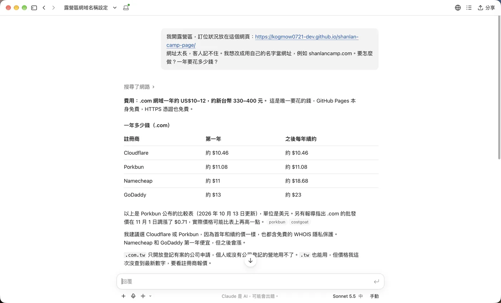
這裡有四個詞要先認識：
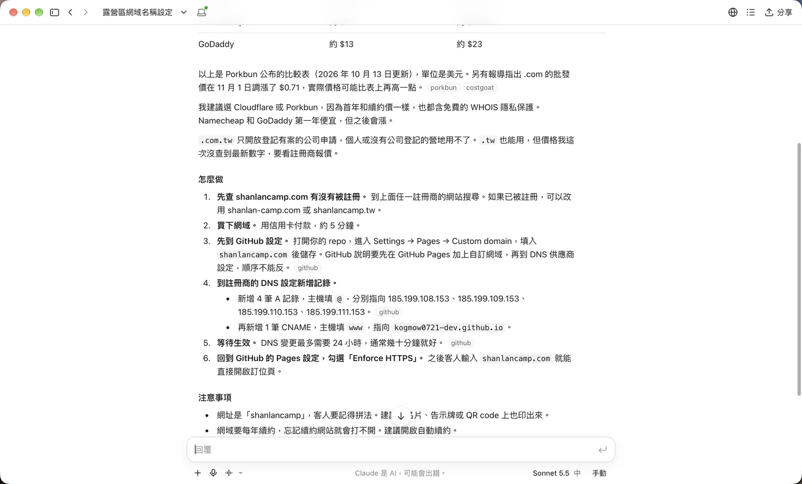
B｜去哪裡買、一年多少錢
Cloudflare：不用登入就能查
到 Cloudflare 的網域頁，在搜尋框打你想要的名字，結果會一邊打一邊出來。
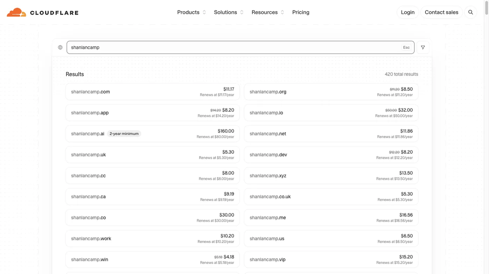
要買就要登入（免費開帳號），流程是：
- 左邊選 Domains → Registrations，按右上角的 Buy domain。
- 搜尋名字，按 .com 那一格，它就放進購物車（右上角的 Cart）。
- 打開 Cart，按 Continue to checkout。
- 結帳頁：註冊年數（預設 1 year）、Automatic renewal 預設開著，沒有任何加購。
- Registrant information 按 Add，填註冊人的姓名、Email、電話、國家、地址。要填真的；Cloudflare 會把這些資料從公開的 WHOIS 查詢遮起來。
- 填好才能按 Continue to payment 付款。網域買了不能退款，拼字要先看清楚。
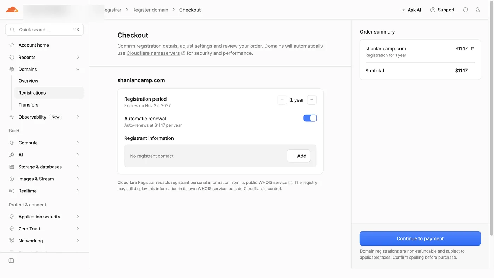
GoDaddy：第一年 NT$1？
同一個名字到 GoDaddy 搜尋，看到的是 NT$1，旁邊小字寫「僅限 3 年效期的第 1 年」。
| 步驟（2026 年 11 月 22 日實際看到的） | 畫面上的金額 |
|---|---|
| 搜尋 shanlancamp.com | NT$1（原價 NT$699），僅限 3 年效期的第 1 年 |
| 按「加入購物車」 | 右上角馬上變 NT$1,399（三年一起買） |
| 下一頁「保護您的網域」 | 全方位網域保護 NT$24/月，預設已勾選 |
| 不改勾選，直接進購物車 | 小計 NT$2,236；2029 年 11 月續約：網域 NT$2,097、網域保護 NT$1,287 |
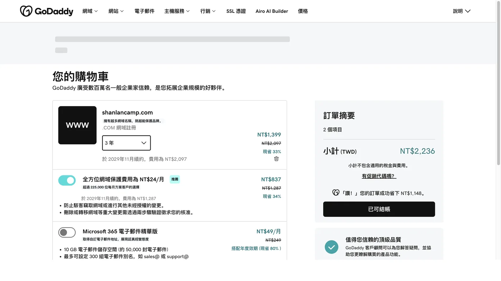
問 Claude 這些要不要買：
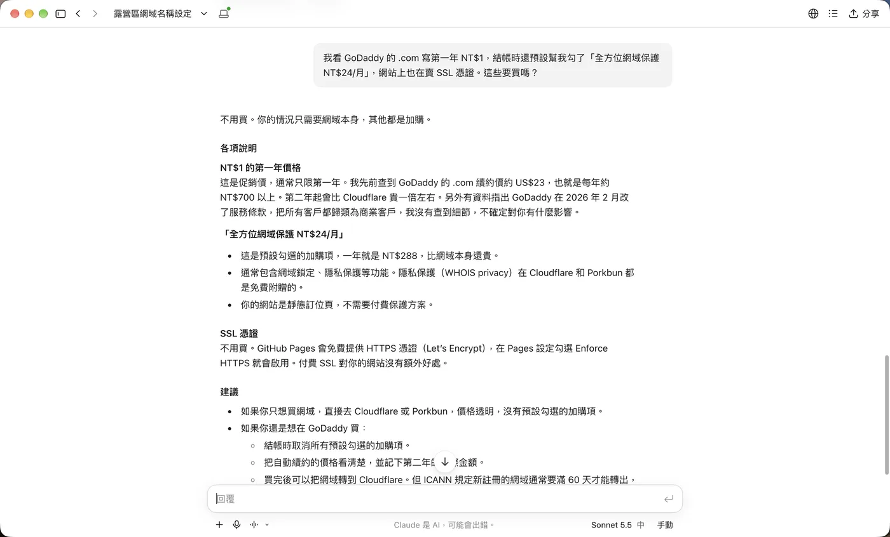
挑註冊商的兩個原則：看續約價，不要只看第一年；預設勾好的加購先取消。想要 .tw 結尾的網域，可以找 PChome 或中華電信 HiNet；.com.tw 只開放有登記的公司行號，.tw 個人也能申請。
C｜把網域接到網頁
網域買好了，打網址還是打不開，因為網路還不知道這個名字要連到哪一台電腦。要做兩邊：GitHub 寫你要用哪個網域，DNS 寫這個網域連到哪裡。官方建議的順序是先 GitHub、再 DNS。
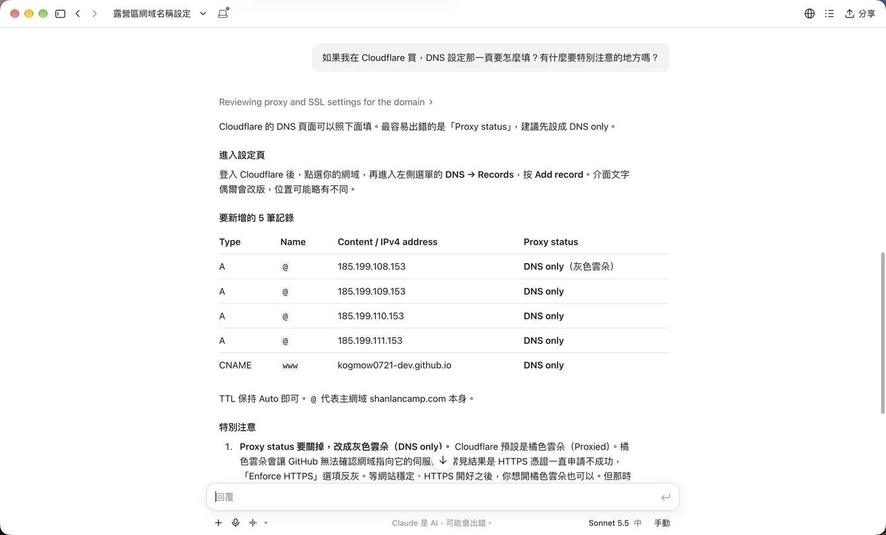
1. GitHub：填 Custom domain
- 打開放網頁的倉庫，按上面的 Settings。
- 左邊選 Pages。
- 往下到 Custom domain，填你的網域（例如 shanlancamp.com），按 Save。
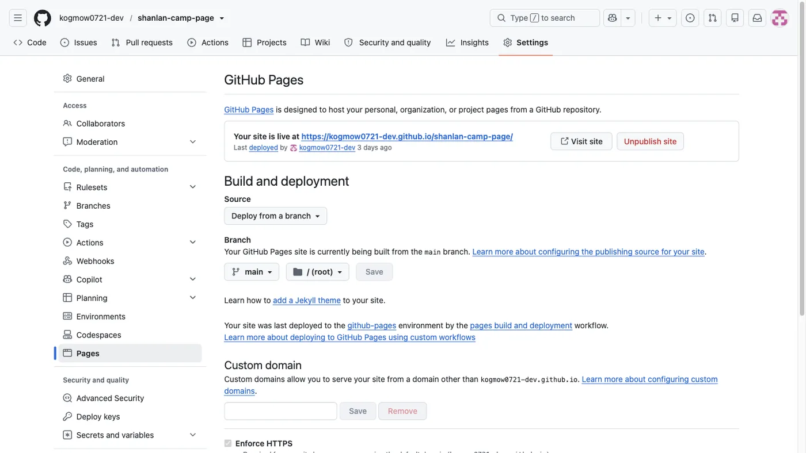
2. Cloudflare：加五筆 DNS 記錄
點進你的網域，左邊選 DNS → Records，按 Add record，一筆一筆加：
| Type | Name | Content（填這個） | Proxy status | |
|---|---|---|---|---|
| A | @ | 185.199.108.153 | DNS only | |
| A | @ | 185.199.109.153 | DNS only | |
| A | @ | 185.199.110.153 | DNS only | |
| A | @ | 185.199.111.153 | DNS only | |
| CNAME | www | 你的帳號.github.io | DNS only |
@ 代表網域本身。CNAME 只填 帳號.github.io，不要加 https://，也不要加後面的倉庫名稱。四個 IP 是 GitHub 官方文件寫的。
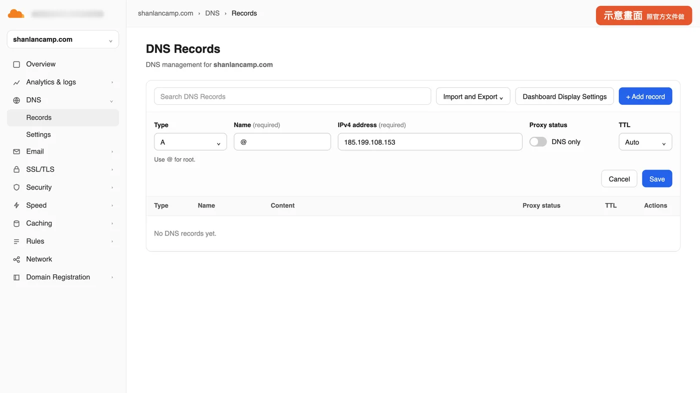
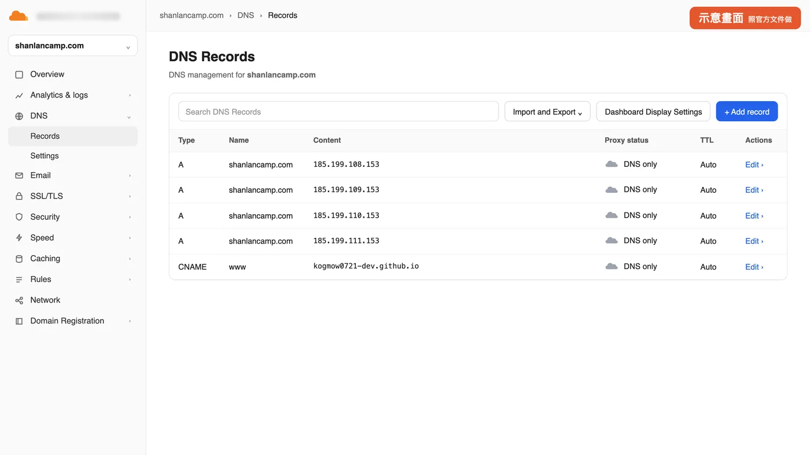
雲朵要灰色。Cloudflare 新增記錄時預設是橘色雲朵（Proxied）。橘色會讓 GitHub 確認不到網域指向它，常見的結果是 HTTPS 憑證一直申請不下來、Enforce HTTPS 不能勾。先用灰色，網站穩定後再研究要不要開。
3. 等它生效
DNS 生效通常幾十分鐘，最久 24 小時。回到 GitHub 的 Pages 設定，Custom domain 下面出現 DNS check successful 就接好了。
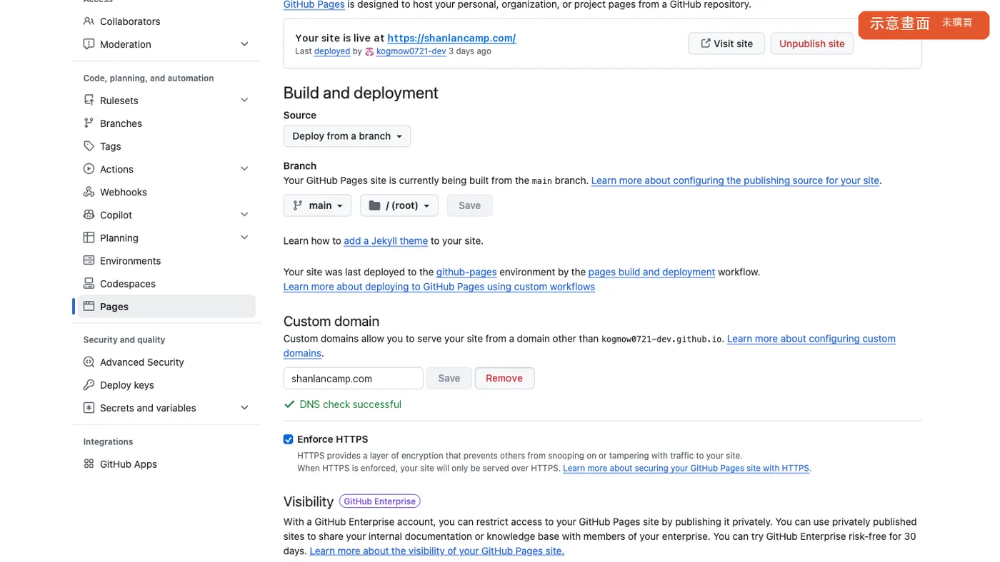
D｜鎖頭和續約
鎖頭（HTTPS）不用買
網址前面的鎖頭代表 HTTPS 加密。註冊商會賣 SSL 憑證，但用 GitHub Pages 不用買：網域接好後，GitHub 會免費申請憑證（Let's Encrypt），在 Pages 設定把 Enforce HTTPS 打勾就好。剛接好時這一格可能還不能勾，憑證申請需要一點時間。
每年續約
網域不是買斷，是一年一年租。到期沒續約，網頁就打不開，名字還可能被別人買走。Cloudflare 結帳時 Automatic renewal 預設開著；信用卡換了，記得到帳戶裡更新。
驗證網域（建議做）
到 GitHub 帳號的 Settings（不是倉庫的）→ Pages → Add a domain，照指示在 DNS 加一筆 TXT 記錄。驗證過，別人就不能把你的網域接到他自己的 GitHub 網頁。
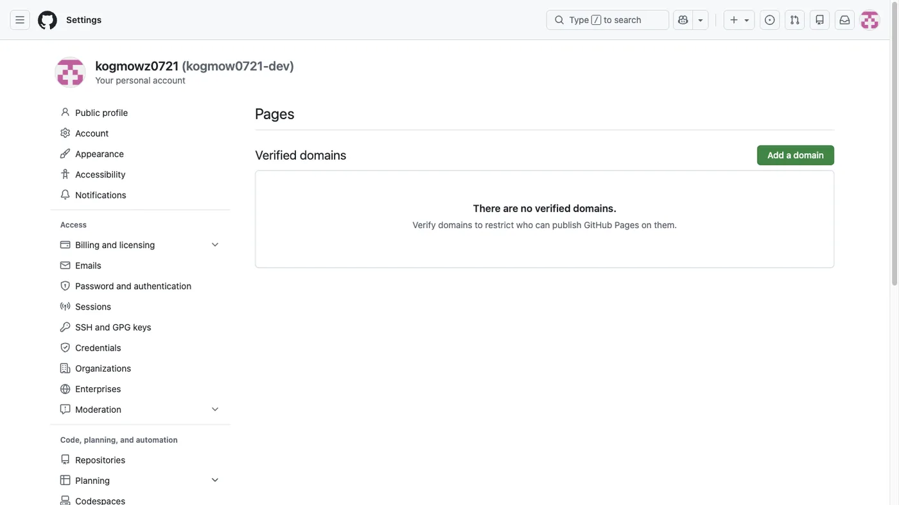
今天的作業
查名字
到 Cloudflare 的網域頁，搜尋你店名的網域，看第一年和續約的價錢。
問 Claude
貼上你的網址，問它換成自己的網域要怎麼做、一年多少錢。
真的買了之後，DNS 檢查一直失敗、鎖頭勾不了，就截圖問 Claude。
下一課：Day 12，RAG 進階：同事用網址就能問的問答工具。
官方來源
- GitHub Docs：管理 GitHub Pages 的自訂網域（A 記錄的 IP、CNAME、先 GitHub 再 DNS）
- GitHub Docs：用 HTTPS 保護 GitHub Pages 網站（Enforce HTTPS）
- GitHub Docs：驗證 GitHub Pages 的自訂網域
- Cloudflare Docs：用 Cloudflare Registrar 註冊網域
- Cloudflare Docs：新增 DNS 記錄
- Cloudflare Docs：Proxy status（橘色和灰色雲朵）
資料查證日期：2026 年 11 月 22 日。Cloudflare、GoDaddy 的價錢是當天實際搜尋、放進購物車看到的，沒有付款。App 的畫面是用付費帳號、繁體中文介面實際操作的樣子。價格和介面請以官方網站為準。